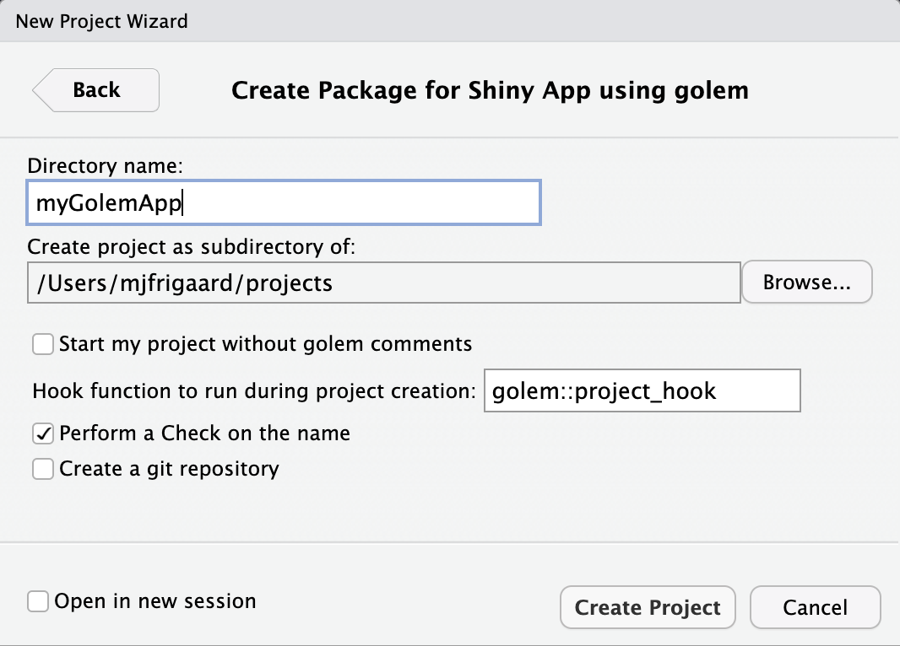
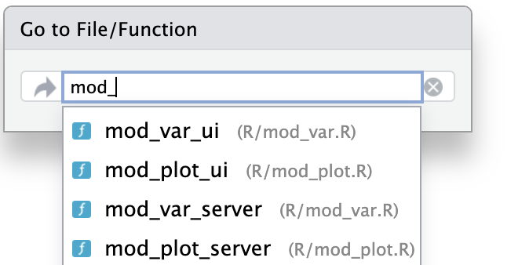
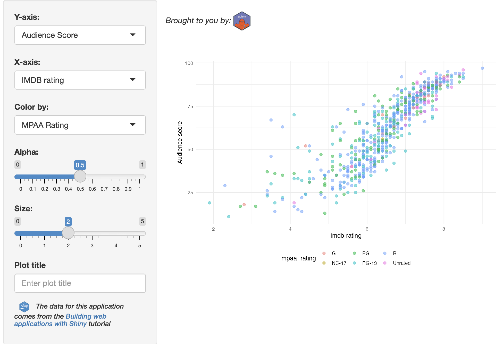

install.packages("golem")
library(golem)
golem::create_golem(path = "gap")The golem framework
The golem package provides many options for R programmers experienced with creating R packages, but who are looking to streamline their application development.1
“opinionated framework for building production-grade Shiny applications”
Below is an overview of the features/functions in the golem framework:
| Feature | Arguments/Options | Description/Comments |
|---|---|---|
dev/ scripts |
|
These files are automatically included in new golem apps and walk through set up, development, and deployment |
fill_desc(): fills DESCRIPTION file |
Arguments are passed as strings without having to worry about formatting (i.e., utils::person()). |
Includes many necessary fields often overlooked when using usethis::create_package() |
attachment::att_amend_desc() |
Updates the package dependencies in the Imports field of DESCRIPTION |
Although not part of the golem package, attachment is built by the fine folks at ThinkR and makes managing dependencies smoother. |
set_golem_options() |
This sets a variety of options in the golem-config.yml file (most notably the name, version, and path to your app-package). |
|
use_recommended_tests() |
Create testthat infrastructure and adds a collection of boilerplate tests in the tests/testthat/ folder. |
|
use_utils_ui() & use_utils_server() |
with_test is set to TRUE |
Creates a collection of commonly used UI and server functions (and accompanying tests). |
add_module("name", fct, utils, export, with_test) |
|
This is one of the best features in An added bonus is a consistent file naming convention. |
add_fct() and add_utils() |
with_test: creates the accompanying tests/testthat/test-[name].R file. |
These are essentially wrappers for usethis::use_r() and usethis::use_test() |
Adding non-R code files:
|
Each
|
Each of these functions create the necessary files in the inst/app folder. |
Getting started
To create a new golem app from the console, enter the following:
If creating a golem app from RStudio’s New Project Wizard, the following defaults are available:

golem shiny appgolem structure
The initial folder structure for a new golem application is below:
gap
├── DESCRIPTION
├── NAMESPACE
├── R
│ ├── app_config.R
│ ├── app_server.R
│ ├── app_ui.R
│ └── run_app.R
├── dev
│ ├── 01_start.R
│ ├── 02_dev.R
│ ├── 03_deploy.R
│ └── run_dev.R
├── inst
│ ├── app
│ │ └── www
│ │ └── favicon.ico
│ └── golem-config.yml
├── man
│ └── run_app.Rd
└── gap.RprojThe dev/ folder contains golem‘s ’guided tour’ scripts. These contain functions to help guide application development.
dev/01_start.Ropens automatically
gap/dev/
├── 01_start.R
├── 02_dev.R
├── 03_deploy.R
└── run_dev.R
1 directory, 4 filesdev/run_dev.Ris for running the ‘development version’ of the application.
Package files
If you are familiar with R package development, you can think of the dev/ scripts as a ‘Shiny app-package development checklist.’
DESCRIPTION: In the
dev/01_start.Rscript, users build aDESCRIPTIONfile withgolem::fill_desc()fill_desc()uses thedescpackage and the sections are entered in akey = "value"format
golem::fill_desc( pkg_name = "gap", pkg_title = "An example goelm app", pkg_description = "A working example of the golem package.", author_first_name = "Martin", author_last_name = "Frigaard", author_email = "mjfrigaard@pm.me", repo_url = NULL # The URL of the GitHub Repo (optional) )- In
dev/02_dev.R, theattachment::att_amend_desc()will “AmendDESCRIPTIONwith dependencies read from package code parsing”.
attachment::att_amend_desc()- If
attachmentis not installed, useinstall.package('attachment')
dev/01_start.R contains the usethis functions for for creating common package development files:
LICENSE
usethis::use_mit_license()README
usethis::use_readme_rmd()Code of Conduct
usethis::use_code_of_conduct()Lifecycle badge
usethis::use_lifecycle_badge("Experimental")NEWS.md
usethis::use_news_md(open = FALSE)Git
usethis::use_git()
golem files
The golem functions in dev/01_start.R are for setting the golem options and using recommended tests.
Options
golem::set_golem_options()Tests (with
testthat)golem::use_recommended_tests()Favicon
golem::use_favicon()Helper functions:
golem::use_utils_ui()andgolem::use_utils_server()creategolem’s UI (R/golem_utils_ui.R) and server (R/golem_utils_server.R) utility functions in theR/folder
golem gives away lots of free code!
Both R/golem_utils_ui.R and R/golem_utils_server.R contain a lot of helper functions that come in handy if you’re tired of writing out particular function names (like reactiveValuesToList() or column(width = 6)/column(width = 12))
Check them out here:
App Code
The dev/02_dev.R file covers the ‘development’ phase of a new a golem app-package. Most of the golem functions in dev/02_dev.R will create files in the R/ and inst/ folders.
The two pre-configured UI and server functions are in R/app_ui.R and R/app_server.R:
R/
├── app_config.R
├── app_server.R
├── app_ui.R
└── run_app.R
1 directory, 4 filesapp_ui()andapp_server()aregolem-flavored UI and server files, which means they include the@noRdtag and include additionalgolemutilities.#' The application User-Interface #' #' @param request Internal parameter for `{shiny}`. #' DO NOT REMOVE. #' @noRd app_ui <- function(request) { tagList( # Leave this function for adding external resources golem_add_external_resources(), # Your application UI logic fluidPage( h1("gap") ) ) }#' The application server-side #' #' @param input,output,session Internal parameters for {shiny}. #' DO NOT REMOVE. #' @import shiny #' @noRd app_server <- function(input, output, session) { # Your application server logic }If you do some digging, you’ll find most of these
golemutilities are wrappers forshinyandusethisfunctions. For example,golem_add_external_resources()is a wrapper forshiny::addResourcePath()andhtmltools::htmlDependency():#' Add external Resources to the Application #' #' This function is internally used to add external #' resources inside the Shiny application. #' golem_add_external_resources <- function() { add_resource_path( "www", app_sys("app/www") ) tags$head( favicon(), bundle_resources( path = app_sys("app/www"), app_title = "gap" ) # Add here other external resources # for example, you can add shinyalert::useShinyalert() ) }- And
app_sys()is a wrapper forsystem.file():
#' Access files in the current app #' #' NOTE: If you manually change your package name in the DESCRIPTION, #' don't forget to change it here too, and in the config file. #' For a safer name change mechanism, use the `golem::set_golem_name()` function. #' #' @param ... character vectors, specifying subdirectory and file(s) #' within your package. The default, none, returns the root of the app. #' #' @noRd app_sys <- function(...) { system.file(..., package = "gap") }- And
run_app.Ris an exported function that is available for me to run my app after I’ve installed the package:library(gap) gap::run_app()
Creating code files
golemhas wrappers for creating modules and helper functions in theR/folder:## Add modules ---- ## Create a module infrastructure in R/ golem::add_module(name = "name_of_module1", with_test = TRUE) golem::add_module(name = "name_of_module2", with_test = TRUE) ## Add helper functions ---- ## Creates fct_* and utils_* golem::add_fct("helpers", with_test = TRUE) golem::add_utils("helpers", with_test = TRUE)with_test = TRUEensures these functions will also create test files intests/
Configuration
The
R/app_config.Rfile contains two functions:app_sys()(covered above) andget_golem_config(), which reads theinst/golem-config.ymlconfiguration filedefault: golem_name: gap golem_version: 0.0.0.9000 app_prod: no production: app_prod: yes dev: golem_wd: !expr here::here()golem-config.ymlgives access to the app version, name, and (development) working directory, so it can be used to add “production-only elements” and is “shareable across golem projects”
get_golem_config()is also included in theR/app_config.Rfile# Read App Config get_golem_config <- function( value, config = Sys.getenv( "GOLEM_CONFIG_ACTIVE", Sys.getenv( "R_CONFIG_ACTIVE", "default" ) ), use_parent = TRUE, # Modify this if your config file is somewhere else file = app_sys("golem-config.yml") ) { config::get( value = value, config = config, file = file, use_parent = use_parent ) }
Test files
golem::use_recommended_tests() creates the tests/ folder and a series of unit tests in the dev/01_start.R script. This function is essentially a wrapper around usethis::use_testthat(), but with some additional ‘recommendations’.2
golem::use_recommended_tests()adds thespellingpackage to ourDESCRIPTIONand updates theWORDLISTThe
testsfolder uses thetestthatframeworktests/testthat/ ├── test-golem-recommended.R ├── test-golem_utils_server.R └── test-golem_utils_ui.R 2 directories, 4 files
External files
The inst/ file initially has the following contents/structure:
inst/
├── WORDLIST
├── app/
│ └── www/
│ └── favicon.ico
└── golem-config.yml The golem-config.yml file is covered above, but the inst/app/ folder works just like the inst/extdata folder (it is loaded when the package is installed and makes these files available to the application).
dev/02_dev.R includes golem wrappers for including CSS, JavaScript, and SASS files to the inst/app/www/ folder:
Deploy
The final script in the guided tour contains functions for deploying a new application to Posit Connect or Docker (it opens automatically after completing the dev/02_dev.R)
RStudio (Posit) Connect
Docker
golem::add_dockerfile_with_renv()andgolem::add_dockerfile_with_renv_shinyproxy()I’ll deploy my app using shinyapps.io, so after running
golem::add_shinyappsio_file()I will see the following output and a newapp.Rfile:golem::add_shinyappsio_file() ── Creating _disable_autoload.R ────────────────────────────────────────────────────── ✔ Created ✔ Setting active project to '/Users/mjfrigaard/projects/gap' ✔ Adding '^app\\.R$' to '.Rbuildignore' ✔ Adding '^rsconnect$' to '.Rbuildignore' ✔ Adding 'pkgload' to Imports field in DESCRIPTION • Refer to functions with `pkgload::fun()` ✔ File created at /Users/mjfrigaard/projects/gap/app.R To deploy, run: • rsconnect::deployApp() • Note that you'll need to upload the whole package to ShinyApps.ioapp.Rcontents# Launch the ShinyApp (Do not remove this comment) # To deploy, run: rsconnect::deployApp() # Or use the blue button on top of this file pkgload::load_all(export_all = FALSE, helpers = FALSE, attach_testthat = FALSE) options( "golem.app.prod" = TRUE) gap::run_app() # add parameters here (if any)
Building a golem app
Building an application with golem is very similar to developing an R package. However, golem streamlines some of the R package development processes into wrapper functions. The sections below cover creating modules, utility functions, and tests in a new golem app:
Modules
New modules and utility functions can be created with golem::add_module() or golem::add_utils()/golem::add_fct().3
add_module(name = 'name',
fct = 'fun',
utils = 'fun',
with_test = TRUE,
export = TRUE)The code above creates the following files:
R/mod_name.R: a boilerplate Shiny module (ui and server functions)show/hide R/mod_name.R
#' name UI Function #' #' @description A shiny Module. #' #' @param id,input,output,session Internal parameters for {shiny}. #' #' @rdname mod_name #' @export #' #' @importFrom shiny NS tagList mod_name_ui <- function(id){ ns <- NS(id) tagList( ) } #' name Server Functions #' #' @rdname mod_name #' @export mod_name_server <- function(id){ moduleServer( id, function(input, output, session){ ns <- session$ns }) } ## To be copied in the UI # mod_name_ui("name_1") ## To be copied in the server # mod_name_server("name_1")R/mod_name_fct_fun.RandR/mod_name_utils_fun.R: empty R files in theR/folder (with the same prefix as the module).tests/testthat/test-mod_name.R: a test file for the module (with some boilerplate tests)show/hide tests/testthat/test-mod_name.R
testServer(mod_name_server, # Add here your module params args = list(), { ns <- session$ns expect_true( inherits(ns, "function") ) expect_true( grepl(id, ns("")) ) expect_true( grepl("test", ns("test")) ) # Here are some examples of tests you can # run on your module # - Testing the setting of inputs # session$setInputs(x = 1) # expect_true(input$x == 1) # - If ever your input updates a reactiveValues # - Note that this reactiveValues must be passed # - to the testServer function via args = list() # expect_true(r$x == 1) # - Testing output # expect_true(inherits(output$tbl$html, "html")) }) test_that("module ui works", { ui <- mod_name_ui(id = "test") golem::expect_shinytaglist(ui) # Check that formals have not been removed fmls <- formals(mod_name_ui) for (i in c("id")) { expect_true(i %in% names(fmls)) } })
The gap application includes two modules:
_apps/gap/R
├── mod_scatter_display.R
└── mod_var_input.Rmod_var_input collects the reactive inputs from the UI and passes them to mod_scatter_display (view the code in these modules here on GitHub).
Utility functions
The scatter_plot() utility function was created with the utils argument of add_module(), so it’s stored the mod_scatter_display_utils.R file:
scatter_plot <- function(df, x_var, y_var, col_var, alpha_var, size_var) {
ggplot2::ggplot(data = df,
ggplot2::aes(x = .data[[x_var]],
y = .data[[y_var]],
color = .data[[col_var]])) +
ggplot2::geom_point(alpha = alpha_var, size = size_var)
}
Code file names
Including mod in the name of module scripts and functions makes it easier to separate them from other functions in my package namespace, if I’m using tab-completion, or if I’m searching for a particular file using Ctrl + .:

Unit tests
golem apps come with boilerplate unit tests via use_recommended_tests(), use_utils_ui(with_test = TRUE), use_utils_server(with_test = TRUE).
tests/testthat/
├── test-golem-recommended.R
├── test-golem_utils_server.R
└── test-golem_utils_ui.R
2 directories, 3 filesDuring development, we can include unit tests for new modules and/or functions using the with_test = TRUE argument.
System tests
System tests can be performed with shinytest2 (similar to non-package or non-golem apps). Two example shinytest2 tests can be found in test-shinytest2.R and test-app-feature-01.R:
tests
└── testthat
├── fixtures
│ ├── make-tidy_ggp2_movies.R
│ └── tidy_ggp2_movies.rds
├── helper.R
├── setup-shinytest2.R
├── test-app-feature-01.R
└── test-shinytest2.Rtest-shinytest2.Rcontains the boilerplate test from runningshinytest2::record_test():show/hide test-shinytest2.R
library(shinytest2) test_that("{shinytest2} recording: feature-01", { app <- AppDriver$new(name = "feature-01", height = 800, width = 1173) app$set_inputs(`vars-y` = "imdb_num_votes") app$set_inputs(`vars-x` = "critics_score") app$set_inputs(`vars-z` = "genre") app$set_inputs(`vars-alpha` = 0.7) app$set_inputs(`vars-size` = 3) app$set_inputs(`vars-plot_title` = "New plot title") app$expect_values() })test-app-feature-01.Rcontainstestthats BDD functions describing an app feature and scenario:show/hide test-app-feature-01.R
library(shinytest2) describe("Feature 1: Scatter plot data visualization dropdowns As a film data analyst I want to explore variables in the movie review data So that I can analyze relationships between movie reivew sources", { describe("Scenario A: Change dropdown values for plotting Given the movie review application is loaded When I choose the variable [critics_score] for the x-axis And I choose the variable [imdb_num_votes] for the y-axis And I choose the variable [genre] for the color", { it("Then the scatter plot should show [critics_score] on the x-axis And the scatter plot should show [imdb_num_votes] on the y-axis And the points on the scatter plot should be colored by [genre]", { app <- AppDriver$new(name = "feature-01-senario-a", height = 800, width = 1173) app$set_inputs(`vars-y` = "imdb_num_votes") app$set_inputs(`vars-x` = "critics_score") app$set_inputs(`vars-z` = "genre") app$expect_values() }) }) describe("Scenario B: Change dropdown values for plotting Given the movie review application is loaded When I choose the size of the points to be [3] And I choose the opacity of the points to be [0.7] And I enter '[New plot title]' for the plot title", { it("Then the size of the points on the scatter plot should be [3] And the opacity of the points on the scatter plot should be [0.7] And the title of the plot should be '[New plot title]'", { app <- AppDriver$new(name = "feature-01-senario-b", height = 800, width = 1173) app$set_inputs(`vars-alpha` = 0.7) app$set_inputs(`vars-size` = 3) app$set_inputs(`vars-plot_title` = "New plot title") app$expect_values() }) }) })
Test coverage
The covrpage package provides a test coverage report in tests/README.md file. This file includes a report of the R file tested, the unit test context, number of tests, and the test status.4
Adding resources
To include other files (like images), add the image file to inst/app/www/, then add the www/ to the path (see example UI code below)
# add icon
shiny::tags$img(src = "www/shiny.png")If I wanted to include images in their own folder (like images/), I can use golem::addResourcePath() to add the name of the sub-folder to inst/app/
# add icon
golem::add_resource_path(
prefix = 'images',
directoryPath = system.file('app/images',
package = 'gap'))Now I can add the image file to the inst/app/www/images/ folder and include the following code in the UI:
# add icon
shiny::tags$img(src = "www/images/golem-hex.png")In R/app_ui.R, the app_ui() function contains the UI layout functions (fluidPage(), sidebarLayout(), etc.), and a call to golem_add_external_resources():
#' The application User-Interface
#'
#' @param request Internal parameter for `{shiny}`.
#' DO NOT REMOVE.
#' @import shiny
#' @noRd
app_ui <- function(request) {
tagList(
# Leave this function for adding external resources
golem_add_external_resources(),
# Your application UI logic
fluidPage(
sidebarLayout(
sidebarPanel(
mod_var_ui("vars"),
h6(
img(src = "www/images/shiny.png", width = "15%"),
em(
"The data for this application comes from the ",
a("Building web applications with Shiny",
href = "https://rstudio-education.github.io/shiny-course/"
),
"tutorial"
)
)
),
mainPanel(
fluidRow(
br(),
p(em("Brought to you by: "),
# add golem hex (in www/images/)
img(src = "www/images/golem-hex.png", width = "5%")
)
),
mod_plot_ui("plot")
)
)
)
)
}After running devtools::load_all(), devtools::document(), devtools::install(), the image is properly rendered with the application:

gap::run_app()gap
Using the
inst/ folder
golem takes advantage of the inst/ folder and R package structure to allow users to provide additional ‘assets’ to the application.
For example, if we use system.file() on the local directory ('.'), we see all the folders available to the application at runtime
fs::dir_tree(path = system.file('', package = 'gap'))
/Library/Frameworks/R.framework/Versions/4.3-x86_64/Resources/library/gap/.
├── DESCRIPTION
├── INDEX
├── LICENSE
├── Meta
│ ├── Rd.rds
│ ├── data.rds
│ ├── features.rds
│ ├── hsearch.rds
│ ├── links.rds
│ ├── nsInfo.rds
│ └── package.rds
├── NAMESPACE
├── R
│ ├── gap
│ ├── gap.rdb
│ └── gap.rdx
├── WORDLIST
├── app
│ └── www
│ ├── favicon.ico
│ └── images
│ ├── golem-hex.png
│ └── shiny.png
├── data
│ ├── Rdata.rdb
│ ├── Rdata.rds
│ └── Rdata.rdx
├── extdata
│ └── movies.RData
├── golem-config.yml
├── help
│ ├── AnIndex
│ ├── aliases.rds
│ ├── gap.rdb
│ ├── gap.rdx
│ └── paths.rds
└── html
├── 00Index.html
└── R.cssDocker
For deployment. golem has multiple functions for building Docker files. The two I’ll cover here are golem::add_dockerfile() and golem::add_dockerfile_with_renv(). In the gap directory, you’ll see the Dockerfile from add_dockerfile(). The files from add_dockerfile_with_renv() are in the inst/docker-renv folder..
add_dockerfile()
add_dockerfile() results in the following Dockerfile:
FROM rocker/verse:4.3.2
RUN apt-get update && apt-get install -y libicu-dev libxml2-dev make pandoc zlib1g-dev && rm -rf /var/lib/apt/lists/*
RUN mkdir -p /usr/local/lib/R/etc/ /usr/lib/R/etc/
RUN echo "options(repos = c(CRAN = 'https://cran.rstudio.com/'), download.file.method = 'libcurl', Ncpus = 4)" | tee /usr/local/lib/R/etc/Rprofile.site | tee /usr/lib/R/etc/Rprofile.site
RUN R -e 'install.packages("remotes")'
RUN Rscript -e 'remotes::install_version("rlang",upgrade="never", version = "1.1.2")'
RUN Rscript -e 'remotes::install_version("knitr",upgrade="never", version = "1.45")'
RUN Rscript -e 'remotes::install_version("stringr",upgrade="never", version = "1.5.1")'
RUN Rscript -e 'remotes::install_version("shiny",upgrade="never", version = "1.8.0")'
RUN Rscript -e 'remotes::install_version("config",upgrade="never", version = "0.3.2")'
RUN Rscript -e 'remotes::install_version("spelling",upgrade="never", version = "2.2.1")'
RUN Rscript -e 'remotes::install_version("rmarkdown",upgrade="never", version = "2.25")'
RUN Rscript -e 'remotes::install_version("golem",upgrade="never", version = "0.4.1")'
RUN Rscript -e 'remotes::install_version("ggplot2",upgrade="never", version = "3.4.4")'
RUN Rscript -e 'remotes::install_github("rstudio/htmltools@a8a3559edbfd9dda78418251e69273fa9dfeb9bc")'
RUN Rscript -e 'remotes::install_github("r-lib/testthat@fe50a222c62cc8733b397690caf3b2a95856f902")'
RUN mkdir /build_zone
ADD . /build_zone
WORKDIR /build_zone
RUN R -e 'remotes::install_local(upgrade="never")'
RUN rm -rf /build_zone
EXPOSE 80
CMD R -e "options('shiny.port'=80,shiny.host='0.0.0.0');library(gap);gap::run_app()"This Dockerfile sets up a Docker image with specific R/Linux packages, adds and installs the gap app-package from the current directory, and configures the container to run the Shiny app on port 80.
FROM rocker/verse:4.3.2which is a pre-built R environment.RUN apt-get update && apt-get install -yupdates and installs several Linux packages:libcurl4-openssl-dev: These are the development files and libraries forlibcurl, which is used for for secure data transfer operations in R packages (theopensslindicates OpenSSL support).libicu-dev: The development files and libraries for the International Components for Unicode library.libssl-dev: The development files and libraries for SSL libraries, necessary for secure communications over networks.libxml2-dev: Development files for thelibxml2library, which is used for parsing XML and HTML documents.make: themakebuild utility that automatically builds executable programs and libraries from source code.pandoc: the universal document converter used for converting markdown files to various other formatszlib1g-dev: development files for thezlibcompression libraryrm -rf /var/lib/apt/lists/*cleans up the package list to reduce the image size.
RUN mkdir -p /usr/local/lib/R/etc/ /usr/lib/R/etc/creates two directories (/usr/local/lib/R/etc/and/usr/lib/R/etc/) for R configuration filesRUN echo "options(...) | tee ...configures global R settings (CRAN repository, download method, and number of CPU cores)RUN R -e 'install.packages("remotes")'installs theremotespackageRUN Rscript -e 'remotes::install_version(...)'is used to installs specific versions of R packages used in the gap app-package without upgrading dependencies.RUN Rscript -e 'remotes::install_github(...)'is used to install R packages directly from GitHub repositories (at specific commits).RUN mkdir /build_zonewill create a directory in the image for building the application.ADD . /build_zoneadds the contents of the current directory (from where the Docker build command is run) into the/build_zonedirectory in the image.WORKDIR /build_zonesets the/build_zonedirectory as the working directory for all subsequent commands.RUN R -e 'remotes::install_local(upgrade="never")'installs the R package located in/build_zonewithout upgrading dependencies (this is ourgapapp-package being containerized).RUN rm -rf /build_zonereduce the final image size by removing the/build_zonedirectory.EXPOSE 80` exposes port 80 of the container (this is typically used for web applications like Shiny apps).
CMD R -e "options('shiny.port'=80,shiny.host='0.0.0.0');library(gap);gap::run_app()"specifies the command to be run when the Docker container starts. These calls set the port and host Shiny app options, loadsgap, and runs the standalone app function (gap::run_app()).
add_dockerfile_with_renv()
add_dockerfile_with_renv() creates a tmp/deploy folder and adds the following files:
deploy/
├── Dockerfile
├── Dockerfile_base
├── README
├── gap_0.0.0.9000.tar.gz
└── renv.lock.prodDockerfile_base
Dockerfile_base is used to create a base image with necessary dependencies and configurations
FROM rocker/verse:4.3.2
RUN apt-get update -y && apt-get install -y make zlib1g-dev git libicu-dev && rm -rf /var/lib/apt/lists/*
RUN mkdir -p /usr/local/lib/R/etc/ /usr/lib/R/etc/
RUN echo "options(renv.config.pak.enabled = FALSE, repos = c(CRAN = 'https://cran.rstudio.com/'), download.file.method = 'libcurl', Ncpus = 4)" | tee /usr/local/lib/R/etc/Rprofile.site | tee /usr/lib/R/etc/Rprofile.site
RUN R -e 'install.packages("remotes")'
RUN R -e 'remotes::install_version("renv", version = "1.0.3")'
COPY renv.lock.prod renv.lock
RUN R -e 'renv::restore()'Each instruction does the following:
RUN apt-get update -y && apt-get installupdates and installs several Linux packages (make,zlib1g-dev,git,libicu-dev)RUN mkdirandRUN echocreates directories and configures R settings (CRAN repository, download method, number of CPUs to use)RUN R -einstalls theremotespackage and version 1.0.3 of therenvpackage (renvis used for project-local package management)COPYcopies a filerenv.lock.prodinto the image asrenv.lockRUN R -eusesrenv::restore()to install the R packages specified in this lock file
Dockerfile
Dockerfile builds on this base image to set up the gap app-package and its dependencies.
FROM gap_base
COPY renv.lock.prod renv.lock
RUN R -e 'renv::restore()'
COPY gap_*.tar.gz /app.tar.gz
RUN R -e 'remotes::install_local("/app.tar.gz",upgrade="never")'
RUN rm /app.tar.gz
EXPOSE 80
CMD R -e "options('shiny.port'=80,shiny.host='0.0.0.0');library(gap);gap::run_app()"- These instructions perform the following:
FROM gap_basestarts fromgap_base, which is the image built usingDockerfile_base.COPY&RUN R -erepeats the step of copyingrenv.lock.prodand restoring packages usingrenv::restore().COPY gap_*.tar.gz /app.tar.gzcopies files matchinggap_*.tar.gz(presumably our compressed app-package) into the image as/app.tar.gz.RUN R -einstalls this local package usingremotes::install_local().RUN rmreduce the size of the final image by removing the copiedtar.gzfile.EXPOSE 80exposes port 80 (necessary for external access to the app when it’s running inside the container).CMD R -edefines the command to run when the container starts, which in this case, runs thegapapplication (gap::run_app()) on port80and (bound to0.0.0.0).
README
The docker run commands in the README creates the base image from Dockerfile_base and starts a container from the Dockerfile image and launch the gap application on port 80.
docker build -f Dockerfile_base --progress=plain -t gap_base .
docker build -f Dockerfile --progress=plain -t gap:latest .
docker run -p 80:80 gap:latest
# then go to 127.0.0.1:80gap_0.0.0.9000.tar.gz is our app-package to deploy in the Docker container.
golem dependencies
golem apps add golem as a dependency.
pak::local_deps_explain(
deps = 'golem',
root = "_apps/gap")
ℹ Loading metadata database
✔ Loading metadata database ... done
gap -> golemNAMESPACE
Below is the namespace file for gap.
# Generated by roxygen2: do not edit by hand
export(run_app)
import(shiny)
importFrom(rlang,.data)As you can see, I’m only exporting the run_app() function from gap.
Imports
The Imports field in the DESCRIPTION file lists the following:
Imports:
config (>= 0.3.1),
ggplot2,
golem (>= 0.3.5),
rlang,
shiny (>= 1.7.4),
stringr,
toolsThe graph in the application uses ggplot2, rlang, and tools. golem is importing config (and itself).
The pak::local_deps_tree() function can tell us what the dependencies look like for an application built with golem:
pak::local_deps_tree(root = "_apps/gap")
local::_apps/gap 0.0.0.9000 ✨👷🏻♂️ ⬇ (unknown size)
├─config 0.3.2 ✨ ⬇ (99.78 kB)
│ └─yaml 2.3.8 ✨ ⬇ (231.13 kB)
├─ggplot2 3.4.4 ✨ ⬇ (4.31 MB)
│ ├─cli 3.6.2 ✨ ⬇ (1.39 MB)
│ ├─glue 1.6.2 ✨ ⬇ (156.74 kB)
│ ├─gtable 0.3.4 ✨ ⬇ (218.00 kB)
│ │ ├─cli
│ │ ├─glue
│ │ ├─lifecycle 1.0.4 ✨ ⬇ (124.22 kB)
│ │ │ ├─cli
│ │ │ ├─glue
│ │ │ └─rlang 1.1.2 ✨ ⬇ (1.89 MB)
│ │ └─rlang
│ ├─isoband 0.2.7 ✨ ⬇ (1.88 MB)
│ ├─lifecycle
│ ├─MASS 7.3-60 < 7.3-60.1 ✋
│ ├─mgcv 1.9-1
│ │ ├─nlme 3.1-164
│ │ │ └─lattice 0.22-5
│ │ └─Matrix 1.6-4
│ │ └─lattice
│ ├─rlang
│ ├─scales 1.3.0 ✨ ⬇ (708.17 kB)
│ │ ├─cli
│ │ ├─farver 2.1.1 ✨ ⬇ (1.99 MB)
│ │ ├─glue
│ │ ├─labeling 0.4.3 ✨ ⬇ (61.22 kB)
│ │ ├─lifecycle
│ │ ├─munsell 0.5.0 ✨ ⬇ (243.42 kB)
│ │ │ └─colorspace 2.1-0 ✨ ⬇ (2.64 MB)
│ │ ├─R6 2.5.1 ✨ ⬇ (83.05 kB)
│ │ ├─RColorBrewer 1.1-3 ✨ ⬇ (53.09 kB)
│ │ ├─rlang
│ │ └─viridisLite 0.4.2 ✨ ⬇ (1.30 MB)
│ ├─tibble 3.2.1 ✨ ⬇ (682.28 kB)
│ │ ├─fansi 1.0.6 ✨ ⬇ (388.94 kB)
│ │ ├─lifecycle
│ │ ├─magrittr 2.0.3 ✨ ⬇ (232.37 kB)
│ │ ├─pillar 1.9.0 ✨ ⬇ (648.66 kB)
│ │ │ ├─cli
│ │ │ ├─fansi
│ │ │ ├─glue
│ │ │ ├─lifecycle
│ │ │ ├─rlang
│ │ │ ├─utf8 1.2.4 ✨ ⬇ (210.04 kB)
│ │ │ └─vctrs 0.6.5 ✨ ⬇ (1.97 MB)
│ │ │ ├─cli
│ │ │ ├─glue
│ │ │ ├─lifecycle
│ │ │ └─rlang
│ │ ├─pkgconfig 2.0.3 ✨ ⬇ (18.18 kB)
│ │ ├─rlang
│ │ └─vctrs
│ ├─vctrs
│ └─withr 2.5.2 ✨ ⬇ (230.90 kB)
├─golem 0.4.1 ✨ ⬇ (1.15 MB)
│ ├─attempt 0.3.1 ✨ ⬇ (109.54 kB)
│ │ └─rlang
│ ├─config
│ ├─here 1.0.1 ✨ ⬇ (51.02 kB)
│ │ └─rprojroot 2.0.4 ✨ ⬇ (105.21 kB)
│ ├─htmltools 0.5.7 ✨ ⬇ (358.55 kB)
│ │ ├─base64enc 0.1-3 ✨ ⬇ (34.81 kB)
│ │ ├─digest 0.6.33 ✨ ⬇ (297.88 kB)
│ │ ├─ellipsis 0.3.2 ✨ ⬇ (39.03 kB)
│ │ │ └─rlang
│ │ ├─fastmap 1.1.1 ✨ ⬇ (201.10 kB)
│ │ └─rlang
│ ├─rlang
│ ├─shiny 1.8.0 ✨ ⬇ (4.47 MB)
│ │ ├─httpuv 1.6.13 ✨ ⬇ (2.66 MB)
│ │ │ ├─later 1.3.2 ✨ ⬇ (607.42 kB)
│ │ │ │ ├─Rcpp 1.0.11 ✨ ⬇ (3.31 MB)
│ │ │ │ └─rlang
│ │ │ ├─promises 1.2.1 ✨ ⬇ (1.82 MB)
│ │ │ │ ├─fastmap
│ │ │ │ ├─later
│ │ │ │ ├─magrittr
│ │ │ │ ├─R6
│ │ │ │ ├─Rcpp
│ │ │ │ └─rlang
│ │ │ ├─R6
│ │ │ └─Rcpp
│ │ ├─mime 0.12 ✨ ⬇ (36.62 kB)
│ │ ├─jsonlite 1.8.8 ✨ ⬇ (1.13 MB)
│ │ ├─xtable 1.8-4 ✨ ⬇ (701.99 kB)
│ │ ├─fontawesome 0.5.2 ✨ ⬇ (1.36 MB)
│ │ │ ├─rlang
│ │ │ └─htmltools
│ │ ├─htmltools
│ │ ├─R6
│ │ ├─sourcetools 0.1.7-1 ✨ ⬇ (137.44 kB)
│ │ ├─later
│ │ ├─promises
│ │ ├─crayon 1.5.2 ✨ ⬇ (162.31 kB)
│ │ ├─rlang
│ │ ├─fastmap
│ │ ├─withr
│ │ ├─commonmark 1.9.0 ✨ ⬇ (357.18 kB)
│ │ ├─glue
│ │ ├─bslib 0.6.1 ✨ ⬇ (6.24 MB)
│ │ │ ├─base64enc
│ │ │ ├─cachem 1.0.8 ✨ ⬇ (69.43 kB)
│ │ │ │ ├─rlang
│ │ │ │ └─fastmap
│ │ │ ├─htmltools
│ │ │ ├─jquerylib 0.1.4 ✨ ⬇ (526.36 kB)
│ │ │ │ └─htmltools
│ │ │ ├─jsonlite
│ │ │ ├─lifecycle
│ │ │ ├─memoise 2.0.1 ✨ ⬇ (47.96 kB)
│ │ │ │ ├─rlang
│ │ │ │ └─cachem
│ │ │ ├─mime
│ │ │ ├─rlang
│ │ │ └─sass 0.4.8 ✨ ⬇ (2.41 MB)
│ │ │ ├─fs 1.6.3 ✨ ⬇ (625.41 kB)
│ │ │ ├─rlang
│ │ │ ├─htmltools
│ │ │ ├─R6
│ │ │ └─rappdirs 0.3.3 ✨ ⬇ (47.30 kB)
│ │ ├─cachem
│ │ ├─ellipsis
│ │ └─lifecycle
│ └─yaml
├─logger 0.2.2 ✨ ⬇ (782.25 kB)
├─rlang
├─shiny
└─stringr 1.5.1 ✨ ⬇ (312.39 kB)
├─cli
├─glue
├─lifecycle
├─magrittr
├─rlang
├─stringi 1.8.3 ✨ ⬇ (14.63 MB)
└─vctrs
Key: ✨ new | ✋ outdated | ⬇ download | 👷🏻♂️ buildRecap
If you typically build Shiny apps in a single app.R file (or in ui.R and server.R files), the golem framework might seem overwhelming. I’ll give a quick overview of some areas I found confusing when I started using goelm:
dev/containsgolem‘s ’guided tour’ scripts (01_start.R,02_dev.R,03_deploy.R) andrun_dev.RR/: the primary app files for the UI and server are stored in theR/folder (R/app_ui.R,R/app_server.R,R/run_app.R), as well as the configuration function (R/app_config.R)golemapps are run using thegap::run_app()function (included in theR/folder)While developing,
golemalso comes with arun_devfunction that reads theR/run_dev.Rfile and evaluates the code.The
inst/folder holds thegolem-config.ymland location of any external app files.Deploying the application can be done with a single function:
rsconnect::deployApp()
Generally speaking, golem’s start-up scripts save time and serve as a gentle introduction to some of the functions used in R package development.
The add_ functions are an area where golem really separates itself from standard R package development. Having dedicated Shiny development functions (and the app/inst/www folder) reduces the cognitive overhead of mapping the standard R package development functions (i.e., those from usethis and devtools) into Shiny app-package development.
golem is a popular framework for a reason–it’s designed to allow developers to build a shiny application and R package simultaneously. Added bonuses include taking advantage of RStudio’s build tools, great documentation, and user-guides..
Footnotes
The tests
golemcreates in thetests/testthat/folder can serve as a nice guide for users new totestthat↩︎New functions created with
golem::add_*()functions are placed in theR/folder with a@noRdtag by default (this behavior can be changed with theexportargument).↩︎Test coverage is only included for the three initial
golemtest files (test-golem-recommended.R,test-golem_utils_server.R,test-golem_utils_ui.R).↩︎